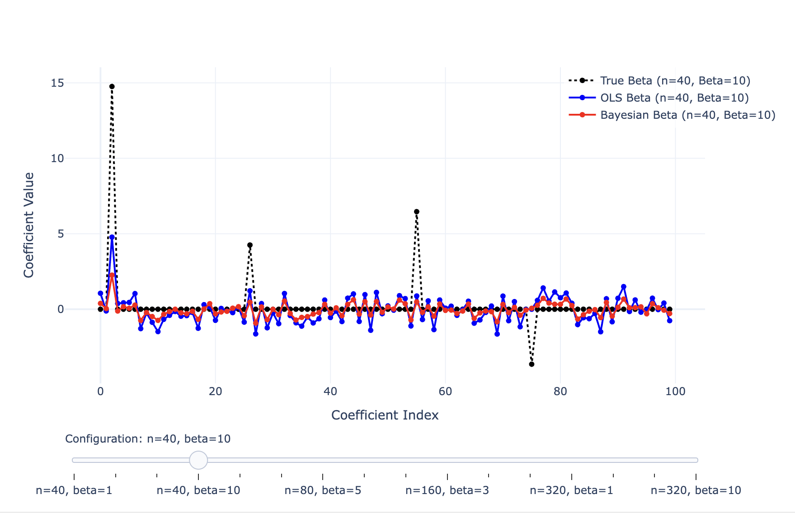

Projects

Exploration of Bayesian Regression
Blog post that discusses the limitations of ordinary least squares (OLS) linear regression and motivates the use of Bayesian regression.
Read MoreCredit Card Fraud Prediction
A step-by-step walk through of a credit card fraud detection project, covering exploratory data analysis, PCA for feature selection, and a logistic regression model optimized to minimize false negatives while maintaining accuracy.
Read More